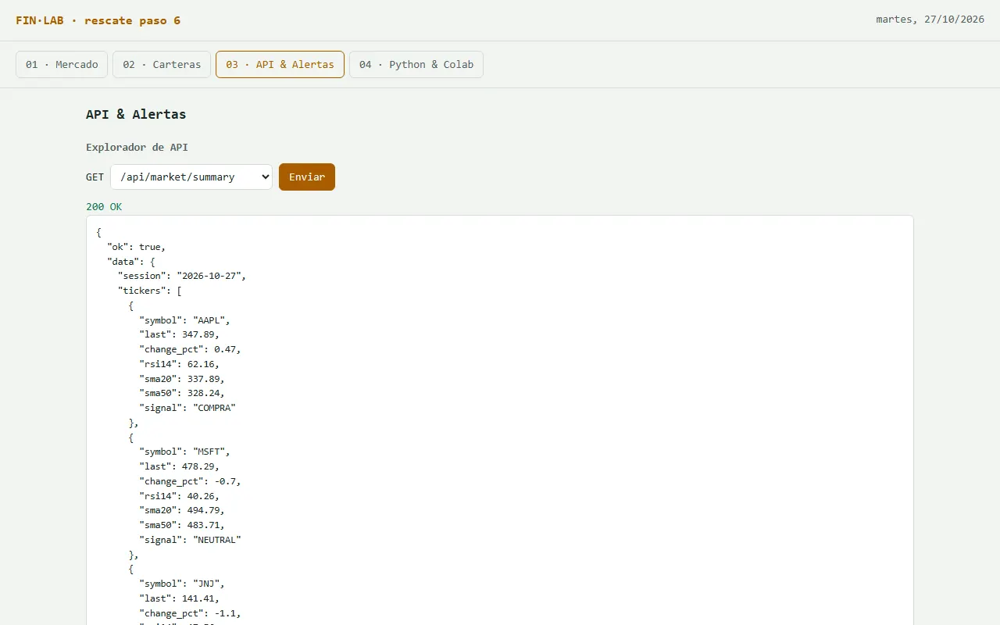

PASO 6 · QUE LOS DATOS SALGAN DE LA PÁGINA
API & Alertas: los datos en formato JSON
Hasta ahora los datos solo se ven en pantalla, para personas. Para que otros programas los usen (n8n, Colab, una planilla) hace falta una API: una ventanilla que contesta en JSON. En la terminal final es el endpoint /api/market/summary. Acá lo simulan dentro de la página y suman alertas.
Qué van a lograr
Un “explorador” donde eligen qué pedir, tocan Enviar y ven la respuesta tal como la recibiría otro programa. Leída por una persona, la respuesta dice esto:
| ACTIVO | PRECIO | HOY | RSI | SEÑAL |
|---|---|---|---|---|
| AAPL | 308,43 | −0,74 % | 53,5 | COMPRA |
| JNJ | 117,88 | +0,25 % | 28,1 | VENTA |
Y así la ve un programa (en JSON). No tienen que escribirla: la arma la página.
{
"ok": true,
"data": {
"session": "2026-10-26",
"tickers": [
{ "symbol": "AAPL", "last": 308.43, "change_pct": -0.74, "rsi14": 53.5,
"sma20": 310.71, "sma50": 292.33, "signal": "COMPRA" },
{ "symbol": "JNJ", "last": 117.88, "change_pct": 0.25, "rsi14": 28.1,
"sma20": 119.96, "sma50": 128.19, "signal": "VENTA" }
]
}
}Así va quedando
- Esqueleto (ya está)
- Datos (ya está)
- Mercado (ya está)
- Indicadores (ya está)
- Carteras (ya está)
- API (este paso)
- Colab (todavía no)
- n8n (todavía no)
- #/guiado (todavía no)
- Clave (todavía no)
- Modelo (todavía no)
- Agente (todavía no)
- Consejo (todavía no)
- MCP (todavía no)

El prompt
Paso 6. En la pestaña "04 · API & Alertas":
- un "explorador de API": un selector con las rutas GET /api/market/summary y GET /api/tickers/{símbolo}, un botón "Enviar" y la respuesta JSON formateada, con el código de estado (200 o 404)
- /api/market/summary devuelve el mismo formato que la API publicada del curso: {"ok": true, "data": {"session": fecha, "tickers": [...]}} y, por activo, symbol, last, change_pct, rsi14, sma20, sma50 y signal
- un símbolo inexistente devuelve 404 con {"ok": false, "error": "..."} en español
- un formulario de alertas: activo + condición (precio mayor que, precio menor que, RSI mayor que, RSI menor que) + umbral
- una lista de alertas creadas que muestre si hoy se dispararía (sí/no) y con qué valor actual
- las alertas se guardan en localStorage y sobreviven a la recarga
Explicame en 3 líneas qué le faltaría a esto para ser una API real accesible desde n8n.
[pegar el archivo completo]Qué hacer, clic por clic
- Peguen el prompt y el archivo actual, guarden la respuesta y abran la pestaña 04 · API & Alertas.
- Prueben las dos rutas con un símbolo que exista y con uno inventado (XXXX).
- Creen dos alertas: una que seguro se dispare (“precio mayor que 0”) y una que no (“precio mayor que 100000”).
- Recarguen la página (F5): las alertas tienen que seguir ahí.
- Lean la explicación que dio la IA sobre qué falta para que sea una API real, y guarden finlab-v6.html.
Cómo comprobar
- Mismos números: el precio, el RSI y la señal de un activo en la API son los mismos que muestra la tabla de Mercado.
- Error controlado: /api/tickers/XXXX devuelve 404 y la página no se rompe.
- Alerta trivial: “precio mayor que 0” figura como disparada; “mayor que 100000”, no.
- Persistencia: después de recargar, las alertas siguen en la lista.
Si algo falla
- La API muestra números distintos a la tabla: “La API y la tabla deberían usar la misma función de cálculo. Hacé que las dos lean del mismo objeto de mercado.”
- Las alertas desaparecen al recargar: pidan que guarde y lea con localStorage, y que muestre un mensaje si el navegador no lo permite (por ejemplo, en una ventana privada).
- La página quedó en blanco: usen el prompt de rescate.
La idea, en un gráfico
Para entender más · cómo funciona y palabras nuevas
El flujo: qué pasa cuando alguien consulta la API
Alguien pregunta
Un programa (o ustedes, en el explorador) pide el resumen o un activo.
La página revisa
¿Existe lo que piden?
Responde en JSON
Con los mismos números de la tabla; si no existe, “404” y un mensaje.
Las alertas
Reglas guardadas que se comparan con los datos del día.